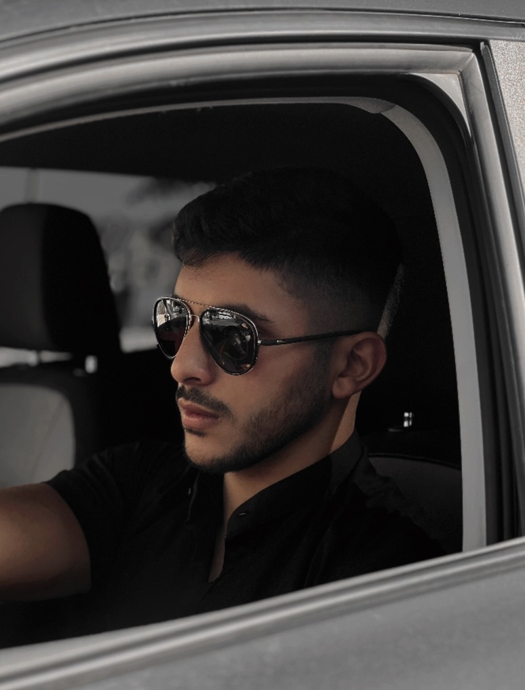
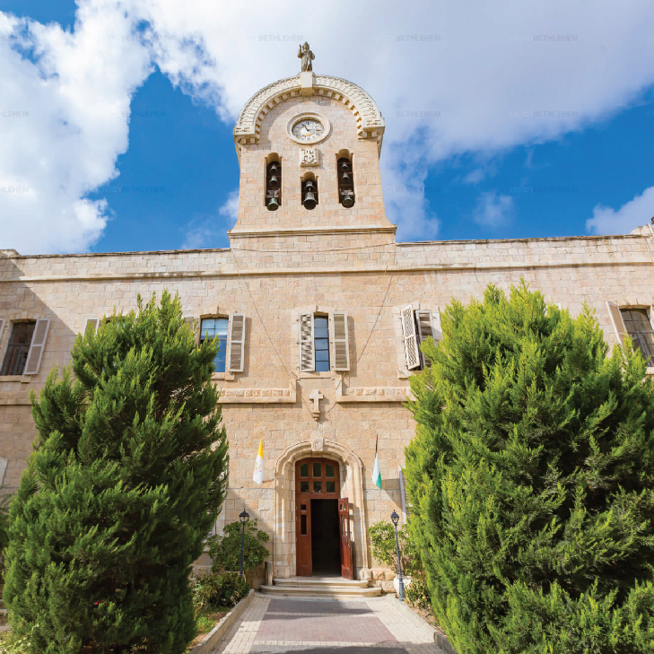

I am Hasan
This is a me😎

My academic life
Hasan Zawahra, the former President of the Palestinian Authority,
has led an eventful academic life. After completing his high school education in Safed, Palestine, Abbas
pursued higher education and earned a law degree
from the University of Damascus in Syria. His academic journey continued as he obtained a PhD in history
from the Patrice Lumumba University in Moscow, Russia.
Throughout his studies,
Zawahra's developed a deep understanding of Middle Eastern history, politics, and international
relations. This academic foundation laid the groundwork for his later involvement in shaping the
political landscape of Palestine.
Hasan's commitment to education and knowledge has played a
significant role in his leadership, emphasizing the importance of intellectual engagement
and a holistic understanding of the complex issues at hand, Furthermore, Hasan Zawahra's passion for
academia extended beyond his formal education. He authored several influential research
papers and books on Middle Eastern history and politics, contributing valuable insights to the field.
His dedication to scholarly pursuits remained a cornerstone of his leadership and vision
for Palestine.
My University
Bethlehem University, located in the historic city of Bethlehem in Palestine's West Bank, is
a renowned educational institution committed to providing quality higher education to Palestinian
students. With its strong emphasis
on academic excellence, cultural awareness, and social responsibility, Bethlehem University plays a
vital role in empowering individuals and
fostering positive change within Palestinian society.
Bethlehem University, in historic Bethlehem, West Bank, promotes quality higher education, cultural
awareness, and social responsibility for Palestinian students.

My Sports
"I love playing football, but I haven't had the opportunity to indulge in this passion frequently due to
the overwhelming stress of life and my recent commitment to studies.
Despite these challenges, I
remain devoted to the sport and cherish the moments when I can step onto the field. Additionally, my
enthusiasm for hitting the gym has been unwavering. I prioritize maintaining a well-toned physique not
only to look good but also to enhance my strength and overall well-being. It serves as a vital outlet
for stress relief, enabling me to navigate the demands of life and academia more effectively.
Incorporating a regular gym routine has provided me with a sense of balance amid the chaos.
It's
not just about aesthetics; it's about building resilience and fostering discipline, which has a positive
ripple effect on all aspects of my life. I find solace in the rhythmic clinking of weights and the
sweat-inducing workouts that push me to my limits.
Although juggling football, studies, and gym sessions can be challenging, I view it as a valuable life
lesson in time management and determination.
The joy I derive from these activities fuels my
motivation to persist, and I remain committed to nurturing both my mental and physical well-being."
My Achievments
In 2006, Hasan was a member of the United States National Academy of Sciences Aeronautics and Space
Engineering Board.
Inc. magazine Entrepreneur of the Year award for 2007 for his work on Tesla and SpaceX.
2007 Index Design award for his design of the Tesla Roadster.[9] Global Green 2006 product design award
for his design of the Tesla Roadster, presented by Mikhail Gorbachev.
American Institute of Aeronautics and Astronautics George Low award for "the most outstanding
contribution in the field of space transportation in 2007/2008". Musk was recognized for his design of
the Falcon 1, the first privately developed liquid-fuel rocket to reach orbit.
National Wildlife Federation 2008 National Conservation Achievement award for Tesla and SolarCity. Other
2008 recipients include journalist Thomas Friedman, U.S. Senator Patrick Leahy (D-VT), and Florida
Governor Charlie Crist.
National Space Society's Von Braun Trophy in 2008/2009, given for leadership of "the most significant
achievement in space". Prior recipients include Burt Rutan and Steve Squyres.
Listed as one of Time's 100 people who most affected the world in 2010.
The world governing body for aerospace records, Fédération Aéronautique Internationale, presented Musk
in 2010 with the highest
award in air and space, the FAI Gold Space Medal, for designing the first privately developed rocket to
reach
orbit. Prior recipients include Neil Armstrong, Burt Rutan of Scaled Composites and John
Glenn.
Elon HASAN's numerous awards showcase his pioneering work in space, electric vehicles, and
sustainable energy, establishing him as an influential figure in aerospace and technology, inspiring
future innovators.
MY City
Bethlehem, located in the West Bank, is a city rich in historical and religious significance. Known as the birthplace of Jesus Christ, it holds great importance for Christian pilgrims around the world. The iconic Church of the Nativity, believed to be built upon the site where Jesus was born, is a major attraction. With its charming streets and traditional architecture, Bethlehem offers a glimpse into Palestinian culture and history. Despite political challenges, the city's warm and welcoming atmosphere prevails, making it a must-visit destination for those seeking spiritual enlightenment and a deeper understanding of biblical heritage.

My Favorites
1. Favorite Food: Bacalhau à Brás, a traditional Portuguese dish made with codfish, eggs, potatoes,
onions, and olives.
2. Favorite Color: White.
3. Favorite Movie: The Sixth Sense.
4. Favorite Music: He enjoys listening to various genres, including hip-hop, R&B, and Brazilian
music.
5. Favorite Hobbies: Ronaldo is known to enjoy spending time with his family, relaxing on the beach, and
playing table tennis.
6. Favorite Travel Destination: Ronaldo loves visiting the scenic coastal towns of Portugal, often
taking in the beauty of the Algarve region.
7. Favorite Book Genre: When he's not on the football field, Cristiano Ronaldo enjoys reading
motivational and self-improvement books to inspire and enhance his mindset.
My role Model
My role Model is prophet Mohammad(PBOH)
Muhammad, in full Abū al-Qasim Muḥammad ibn ʿAbd Allah ibn ʿAbd al-Muttalib ibn Hashim, (born c. 570,
Mecca, Arabia [now in Saudi Arabia]—died June 8, 632, Medina), the founder of Islam and the proclaimer
of the Qurʾan.
Muhammad is traditionally said to have been born in 570 in Mecca and to have died in 632 in Medina,
where he had been forced to emigrate to with his adherents in 622.
Muhammad, also known as Prophet Muhammad (peace be upon him), is a central figure in Islam, revered as
the last prophet and messenger of Allah (God).
Born in Mecca around 570 AD, he received divine
revelations culminating in the Quran.
He peacefully spread the message of Islam and, in 622,
migrated to Medina due to persecution. His teachings and actions continue to profoundly influence the
lives and beliefs of millions of Muslims worldwide.